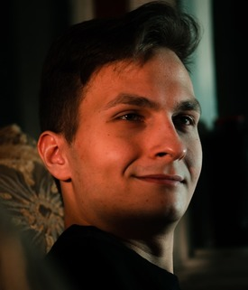

ОБО МНЕ
ПРОЕКТЫ
КОНТАКТЫ
Копийко
Андрей васильевич

Родился в Братиславе в 2001 году в семье обычных работяг. В младенчестве освоил азы жизни и принялся искать братух по всему белу свету. Очутился в ДВФУ, где был завербован группировкой Нереальный кумар, а позже и вовсе обзавёлся свиным пузом и чепыркой.
Любит яой, Тик-Ток и поковыряться в заднице.
2021 © Kokov1ch
>